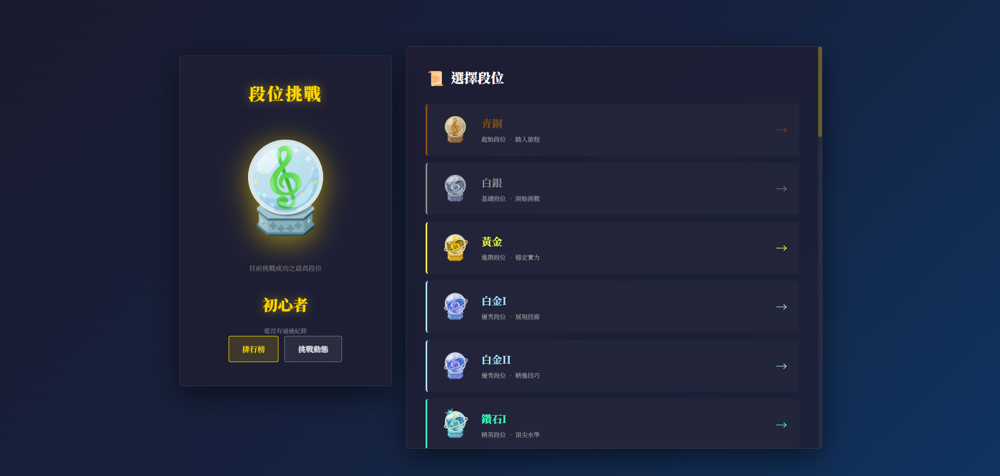

段位挑戰
由委員現場監督的實力驗證。在指定曲目與血量限制下完成挑戰，通過即取得該段位。從青銅一路到 Infinity，每一階都是可以被證明的進步。
血量怎麼算
每個段位有一條血量，所有指定曲目共用，不會每首重置。判定失誤會扣血，血量歸零即挑戰失敗。
預設扣血
- PERFECT
- −0
- GREAT
- −1
- GOOD
- −2
- BAD
- −3
- MISS
- −5
各段位可以覆寫這組數值，部分曲目還有專屬的扣血規則。曲目規則優先於段位規則，段位規則優先於預設值。實際數字以各段位頁面為準。
段位怎麼走
從青銅開始，依序往上。中間有三個解鎖任務，必須先通過才能挑戰後面的段位。
青銅白銀黃金
白金 I–II鑽石 I–II大師 I–III
巔峰解鎖任務巔峰 I–III
亞神 I–III神 I–III
天啟解鎖任務天啟 I–III
創神 I–III
無限挑戰解鎖任務Infinity
解鎖任務是單曲、低血量的關卡，並且有每日次數限制：巔峰每日三次、天啟每日兩次、無限每日一次。一般段位沒有次數限制，失敗後可以重新預約。
怎麼參加

段位挑戰頁面。左側是你目前的最高段位，右側選段位進去看指定曲目與規則。
-
用 Discord 登入
登入後才能預約，也才能在排行榜上對應到你的紀錄。
-
挑你要挑戰的段位
段位頁面會列出指定曲目、難度、血量與該段位的特殊規則。先確認自己打得動再預約。
-
按「立即預約」
系統會在 Discord 通知委員，附上你選的段位與備註。可以填方便的時段。
-
進語音頻道挑戰
委員安排時間後，在語音頻道分享畫面或手元，全程監督完成指定曲目。
-
結果登記
委員審核後登記通過與否，紀錄會出現在挑戰動態，通過的段位會反映在排行榜上。